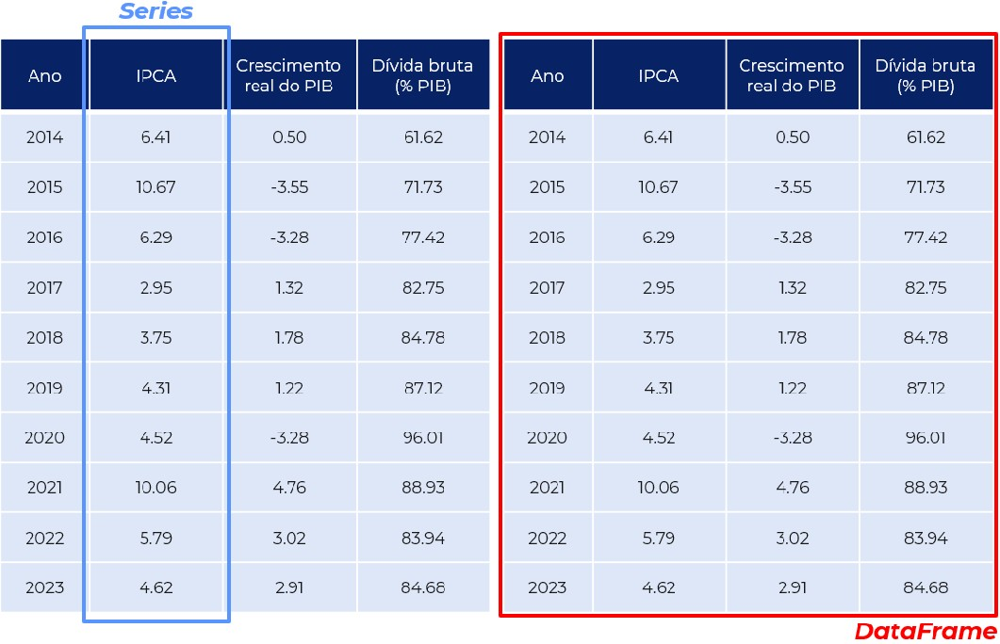
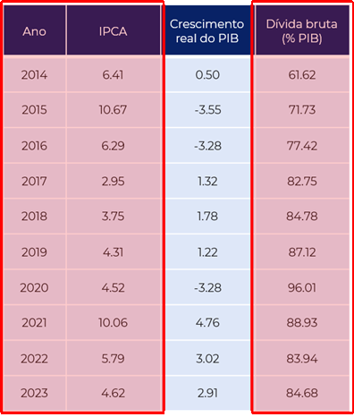
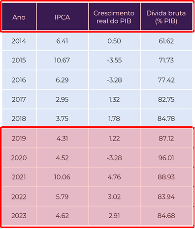
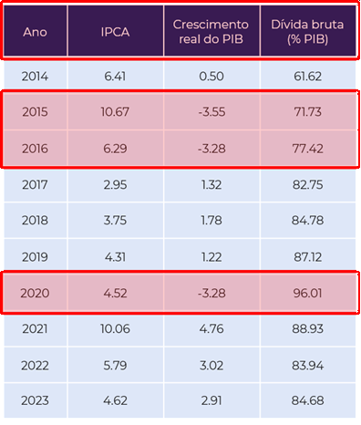
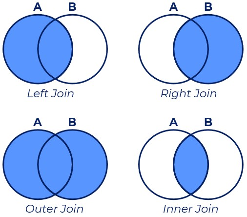

import numpy as np
import pandas as pd
import os8 Gestão e análise de dados
8.1 Introdução
Até agora trabalhamos principalmente com objetos isolados: números, strings, listas e arrays. Em aplicações empíricas reais, porém, os dados normalmente aparecem organizados em tabelas, nas quais cada linha representa uma observação e cada coluna representa uma variável. O pacote Pandas foi criado justamente para facilitar a manipulação desse tipo de estrutura. Ele fornece ferramentas para importar, filtrar, transformar, combinar e resumir bases de dados de forma eficiente.
Em economia aplicada, praticamente todo trabalho empírico utiliza operações desse tipo: selecionar municípios, combinar bases administrativas, calcular médias por grupo, tratar valores ausentes e reorganizar dados antes de estimar modelos econométricos.

8.1.1 Pré-requisitos
O foco deste capítulo será o pacote Pandas, que, apesar de já vir instalado com o Anaconda, não é nativo do Python e, portanto, é preciso carregá-lo. Além disso, por conta de suas estrutura e lógica de operações elemento a elemento, utilizaremos também o NumPy. O pacote os serve ao propósito de gerir local de trabalho e diretórios.
numpypandasos
8.2 O que é o Pandas?
Pandas é uma biblioteca que contém objetos específicos e ferramentas próprias a esses objetos que permitem realizar limpeza, organização e análise de dados de forma bastante eficiente no Python. Não à toa, é uma das bibliotecas mais utilizadas na linguagem hoje em dia, um pré-requisito para a maior parte das aplicações de ciência dos dados e aprendizado de máquina.
Embora o Pandas se utilize em grande medida da estrutura e lógica do NumPy e seus arrays, a biblioteca é projetada para trabalhar com dados tabulares e heterogêneos. Como já vimos, o NumPy é mais adequado para trabalhar com dados homogêneos e em sua maior parte numéricos. Se por um lado o NumPy tem como objetos principal o ndarray, são dois os objetos particulares ao Pandas: Series e DataFrame.
Você pode pensar em uma série como uma coluna de dados, como uma sequência de observações em uma única variável. Por outro lado, um DataFrame é um objeto bidimensional para armazenar colunas de dados relacionadas, assim como uma tabela do Microsoft Excel, com linhas que identificam a qual entidade as informações das colunas se referem. A Figura Figura 8.2 ilustra essa diferença.

8.3 Objetos no Pandas
Existem várias formas de criar esses objetos no Pandas. A primeira forma é faze-lo manualmente, através de listas e dicionários que armazenem os dados. Vamos começar criando duas listas: uma contendo o número de pessoas ocupadas (em mil pessoas) no Brasil de 2012 a 2021 e outra contendo exatamente o intervalo de anos.
pessoas_ocupadas = [90593,92170,92962,92366,90174,92228,93534,95515,87225,95747]
anos = list(range(2012,2021+1))
print(pessoas_ocupadas)
print(anos)[90593, 92170, 92962, 92366, 90174, 92228, 93534, 95515, 87225, 95747]
[2012, 2013, 2014, 2015, 2016, 2017, 2018, 2019, 2020, 2021]Para criar uma série basta utilizar a função pandas.Series, que recebe como argumento os valores da série e os índices da série, que serão justamente os valores que identificam cada linha.
series_pessoas_ocup = pd.Series(data=pessoas_ocupadas,index=anos)
print(type(series_pessoas_ocup),'\n')
print(series_pessoas_ocup)<class 'pandas.core.series.Series'>
2012 90593
2013 92170
2014 92962
2015 92366
2016 90174
2017 92228
2018 93534
2019 95515
2020 87225
2021 95747
dtype: int64Já para o caso de um DataFrame, podemos criá-lo através da função pandas.DataFrame. Essa função recebe os dados que irão compor as colunas de dados de diversas formas, mas umas das mais intuitivas é através da utilização de dicionários. Seguindo o exemplo anterior, vamos criar um DataFrame com as informações de pessoas ocupadas, desocupadas, dentro e fora da força de trabalho. Primeiro passo é definir o dicionário com esses dados.
dados = {
'ocupadas': [90593,92170,92962,92366,90174,92228,93534,95515,87225,95747],
'desocupadas': [6730,6151,6555,9222,12476,12453,12413,11903,14412,12011],
'na forca': [97322,98321,99516,101588,102650,104682,105947,107418,101637,107758],
'fora da forca': [58007,59244,60162,60092,60953,60777,61299,61579,69042,64525]
}
print(dados){'ocupadas': [90593, 92170, 92962, 92366, 90174, 92228, 93534, 95515, 87225, 95747], 'desocupadas': [6730, 6151, 6555, 9222, 12476, 12453, 12413, 11903, 14412, 12011], 'na forca': [97322, 98321, 99516, 101588, 102650, 104682, 105947, 107418, 101637, 107758], 'fora da forca': [58007, 59244, 60162, 60092, 60953, 60777, 61299, 61579, 69042, 64525]}Agora basta definir o DataFrame usando como argumento esse dicionários dados.
dados_emprego = pd.DataFrame(data=dados,index=anos)
print(type(dados_emprego),'\n')
dados_emprego.head()<class 'pandas.core.frame.DataFrame'>
| ocupadas | desocupadas | na forca | fora da forca | |
|---|---|---|---|---|
| 2012 | 90593 | 6730 | 97322 | 58007 |
| 2013 | 92170 | 6151 | 98321 | 59244 |
| 2014 | 92962 | 6555 | 99516 | 60162 |
| 2015 | 92366 | 9222 | 101588 | 60092 |
| 2016 | 90174 | 12476 | 102650 | 60953 |
8.4 Importação de dados externos
Um dos principais pontos fortes do Pandas é justamente a capacidade de importar e exportar informações nos mais diversos formatos: planilhas de Microsoft Excel (.xlsx), arquivos de texto separado por vírgulas (.csv), etc. Mais do que trabalhar com esses arquivos, o Pandas o faz de maneira eficiente e em poucas linhas de código. Funções como read_csv e to_csv, por exemplo, são essenciais para o conjunto de ferramentas do cientista de dados em Python.
A ideia daqui para frente é trabalhar com os dados da Penn World Table version 11.0, base de dados com informação sobre níveis de renda, produto e produtividade de mais de 180 países durante o período de 1950 a 2023. Esses dados são mantidos pela Universidade de Groningen e atualizados periodicamente. O arquivo específico com o qual trabalharemos está disponível no Moodle e deve ser baixado para a sua máquina local.
Mas antes de aprendermos como trabalhar com um dataframe e as funcionalidades que o Pandas nos traz precisamos ler o arquivo com os nossos dados. Comecemos pela função os.chdir do pacote os para mudar o diretório base do Python para o diretório no qual o nosso arquivo se encontra:
# Qual o diretório no qual o Python está trabalhando? A função getcwd() nos diz isso
print('Diretório inicial: {}'.format(os.getcwd()))
# Vamos mudar para o nosso diretório atual
os.chdir('C:/Users/user/Desktop/EAE1106')
print('Diretório final: {}'.format(os.getcwd()))Diretório inicial: D:\Dropbox
Diretório final: C:\Users\user\Desktop\EAE1106Quais são os arquivos disponíveis nesse diretório? A função os.listdir() lista as pastas e arquivos disponíveis no diretório que estamos trabalhando.
os.listdir()['avhbr_pwt11.png',
'avh_bar.png',
'avh_barh.png',
'avh_countries2_pwt11.png',
'avh_countries_pwt11.png',
'avh_pibpc_scatter.png',
'carac_countries_all.png',
'casos_covid_br.png',
'casos_mortes_scatter.png',
'df_resultado_aula_pandas.csv',
'fhvhv_tripdata_2019-12.parquet',
'projeto_empirico',
'pwt110.csv',
'pwt110.xlsx',
'pwt110_selected.csv',
'pwt110_selected.xlsx']Agora utilizaremos a função pandas.read_csv para ler o arquivo pwt110_selected.csv. Esse arquivo contém informações selecionadas para os 185 países da amostra. Além do nome do arquivo, passamos dois argumentos adicionais para a função: sep e encoding.
O argumento sep define qual caractere é utilizado para separar as colunas do arquivo. Embora arquivos CSV frequentemente utilizem vírgulas como separador (Comma-Separated Values), é bastante comum encontrar bases em que os valores são separados por ponto e vírgula ou outros caracteres especiais. Nesse caso, utilizamos sep=';' para informar ao pandas que as colunas devem ser identificadas a partir desse separador.
Já o argumento encoding especifica a codificação de caracteres utilizada no arquivo. A codificação define como letras, números e símbolos são armazenados internamente no computador. Utilizar a codificação correta é particularmente importante quando a base contém acentos e outros caracteres especiais. Aqui utilizamos encoding='utf8', uma das codificações mais comuns atualmente e amplamente compatível com diferentes sistemas operacionais e aplicações.
df_pwt = pd.read_csv('pwt110_selected.csv', sep=';', encoding='utf8')
type(df_pwt)pandas.core.frame.DataFrameA função read_csv faz parte de um conjunto bastante amplo de funções de importação e exportação de dados disponíveis no pandas. Mais adiante retomaremos esse tema ao estudar as funções to_, utilizadas para exportar tabelas e resultados produzidos durante a análise para os mais diferentes formatos disponíveis.
8.5 DataFrames: o coração do Pandas
A partir deste ponto começaremos a explorar com mais profundidade o objeto central da biblioteca: o DataFrame. É nele que normalmente realizamos a maior parte do trabalho empírico, como seleção de observações, criação de variáveis, agrupamentos e análises descritivas.
Como dito anteriormente, um DataFrame pode ser entendido como uma tabela bidimensional semelhante a uma planilha do Excel ou a uma base de dados estatística, em que cada linha representa uma observação e cada coluna representa uma variável. O pandas fornece uma grande quantidade de métodos específicos para manipular esse tipo de estrutura de maneira eficiente e relativamente intuitiva.
8.5.1 Características básicas
Alguns métodos específicos ao objeto DataFrame nos são incrivelmente úteis quando queremos ter uma leitura rápida do que acabamos de gerar.
df.info()nos retorna algumas informações técnicas do dataframedf, como o formato dos dados presentes em cada coluna.
df_pwt.info(memory_usage='deep')<class 'pandas.core.frame.DataFrame'>
RangeIndex: 13690 entries, 0 to 13689
Data columns (total 14 columns):
# Column Non-Null Count Dtype
--- ------ -------------- -----
0 countrycode 13690 non-null object
1 country 13690 non-null object
2 currency_unit 13690 non-null object
3 year 13690 non-null int64
4 pop 11201 non-null float64
5 emp 10307 non-null float64
6 rgdpna 11201 non-null float64
7 avh 5015 non-null float64
8 hc 9217 non-null float64
9 rconna 11201 non-null float64
10 rdana 11201 non-null float64
11 rnna 11028 non-null float64
12 labsh 8215 non-null float64
13 delta 11028 non-null float64
dtypes: float64(10), int64(1), object(3)
memory usage: 3.4 MBdf.head(n)edf.tail(n)nos retornam asnprimeiras enúltimas linhas, respectivamente.
df_pwt.head(2) # método para apresentar apenas as primeiras duas linhas do dataframe| countrycode | country | currency_unit | year | pop | ... | rconna | rdana | rnna | labsh | delta | |
|---|---|---|---|---|---|---|---|---|---|---|---|
| 0 | ABW | Aruba | Aruban Guilder | 1950 | NaN | ... | NaN | NaN | NaN | NaN | NaN |
| 1 | ABW | Aruba | Aruban Guilder | 1951 | NaN | ... | NaN | NaN | NaN | NaN | NaN |
2 rows × 14 columns
Ué, mas não são 14 colunas? Onde estão todas elas? Por padrão o pandas mostra apenas uma parcela do total, para alterar essas opções basta utilizar a função pd.set_option e mudar o argumento relacionado ao número máximo de colunas.
pd.set_option('display.max_columns', 100)
df_pwt.head(2)| countrycode | country | currency_unit | year | pop | emp | rgdpna | avh | hc | rconna | rdana | rnna | labsh | delta | |
|---|---|---|---|---|---|---|---|---|---|---|---|---|---|---|
| 0 | ABW | Aruba | Aruban Guilder | 1950 | NaN | NaN | NaN | NaN | NaN | NaN | NaN | NaN | NaN | NaN |
| 1 | ABW | Aruba | Aruban Guilder | 1951 | NaN | NaN | NaN | NaN | NaN | NaN | NaN | NaN | NaN | NaN |
df.describe()nos retorna uma tabela de estatísticas descritivas das colunas numéricas.
df_pwt.describe()| year | pop | emp | rgdpna | avh | hc | rconna | rdana | rnna | labsh | delta | |
|---|---|---|---|---|---|---|---|---|---|---|---|
| count | 13690.00000 | 11201.000000 | 10307.000000 | 1.120100e+04 | 5015.000000 | 9217.000000 | 1.120100e+04 | 1.120100e+04 | 1.102800e+04 | 8215.000000 | 11028.000000 |
| mean | 1986.50000 | 31.708879 | 14.397923 | 3.950347e+05 | 1995.863422 | 2.127556 | 2.903016e+05 | 3.904631e+05 | 1.739550e+06 | 0.523476 | 0.043042 |
| std | 21.36079 | 118.073842 | 58.505511 | 1.525476e+06 | 320.341119 | 0.739408 | 1.105490e+06 | 1.533064e+06 | 6.595402e+06 | 0.124389 | 0.013382 |
| min | 1950.00000 | 0.004420 | 0.001180 | 1.615750e+01 | 1313.570000 | 1.007038 | 2.269696e+01 | 2.849165e+01 | 1.966073e+01 | 0.084364 | 0.012140 |
| 25% | 1968.00000 | 1.677382 | 0.793171 | 8.814905e+03 | 1743.505000 | 1.478258 | 7.249839e+03 | 8.761411e+03 | 2.555000e+04 | 0.445721 | 0.033917 |
| 50% | 1986.50000 | 6.323060 | 2.892331 | 4.071412e+04 | 1983.210000 | 2.035692 | 3.348346e+04 | 4.067692e+04 | 1.383617e+05 | 0.523455 | 0.040115 |
| 75% | 2005.00000 | 20.568728 | 8.566412 | 2.249628e+05 | 2232.590000 | 2.720364 | 1.612985e+05 | 2.149864e+05 | 8.200364e+05 | 0.613714 | 0.049590 |
| max | 2023.00000 | 1438.069596 | 774.418213 | 3.104758e+07 | 3039.790000 | 3.986023 | 2.055370e+07 | 2.990740e+07 | 1.710951e+08 | 0.911995 | 0.110218 |
Uma outra coisa que pode ser bastante interessante é saber quantas vezes os valores de determinada variável se repetem. Para isso é preciso primeiro selecionar uma coluna específica do DataFrame, o que é feito utilizando a lógica de dicionários em que o nome de uma coluna é como uma chave associada a uma lista de valores. A partir da seleção da coluna, basta aplicar o método value_counts. A título de exemplo, vejamos quantas vezes cada país da base de dados aparece no DataFrame.
df_pwt['country'].value_counts()country
Aruba 74
Norway 74
Montserrat 74
Mauritius 74
Malawi 74
..
Guinea 74
Gambia 74
Guinea-Bissau 74
Equatorial Guinea 74
Zimbabwe 74
Name: count, Length: 185, dtype: int64As opções normalize e dropna nos permitem, respectivamente, olhar para frequência relativa, ao invés de absoluta, e excluir da tabulação as observações em que o valor da coluna country nao está disponível, isto é, é missing.
df_pwt['country'].value_counts(normalize=True,dropna=False)country
Aruba 0.005405
Norway 0.005405
Montserrat 0.005405
Mauritius 0.005405
Malawi 0.005405
...
Guinea 0.005405
Gambia 0.005405
Guinea-Bissau 0.005405
Equatorial Guinea 0.005405
Zimbabwe 0.005405
Name: proportion, Length: 185, dtype: float64
ImportanteMissing não é a mesma coisa que zero
Em bases de dados reais, valores ausentes (missing values) são extremamente comuns. No pandas, eles normalmente aparecem como NaN (Not a Number). É importante não confundir um valor ausente com o número zero. Um salário igual a zero significa que a informação existe e vale zero. Já um NaN indica que a informação está ausente, indisponível ou não foi observada.
Muitas funções do pandas ignoram automaticamente valores missing em cálculos estatísticos. Por exemplo, médias calculadas com mean() normalmente desconsideram observações com NaN. Antes de remover ou substituir valores ausentes, é importante entender por que eles aparecem na base e como podem afetar a análise.
8.5.2 Seleção e filtragem
Por vezes pode ser interessante selecionar e filtrar os dados que temos de acordo com algum interesse específico.



São várias as formas, umas mais diretas e outras mais poderosas, de realizar esse tipo de operação no Python. Mas vamos começar do começo aqui. A forma mais simples de selecionar um intervalo particular de linhas do DataFrame é através da lógica de indexação de sequências ordenadas, como listas, tuplas ou mesmo arrays. Para o caso em que estejamos interessados em selecionar apenas as duas primeiras linhas do DataFrame basta utiliza o código abaixo:
df_pwt[0:2]| countrycode | country | currency_unit | year | pop | emp | rgdpna | avh | hc | rconna | rdana | rnna | labsh | delta | |
|---|---|---|---|---|---|---|---|---|---|---|---|---|---|---|
| 0 | ABW | Aruba | Aruban Guilder | 1950 | NaN | NaN | NaN | NaN | NaN | NaN | NaN | NaN | NaN | NaN |
| 1 | ABW | Aruba | Aruban Guilder | 1951 | NaN | NaN | NaN | NaN | NaN | NaN | NaN | NaN | NaN | NaN |
No entanto, para selecionar um intervalo específico de linhas e colunas, a lógica de indexação que utilizamos com arrays de duas dimensões no NumPy não se aplica. Para tal, precisamos de alguns métodos de DataFrames. Utilizando a função .iloc podemos selecionar linhas e colunas com os índices numéricos. E se quisermos, por exemplo, manter todas as linhas mas apenas as colunas country, currency_unit, year, pop, emp e rgdpna? Lembre-se que quando o Python lida com intervalos, na grande maioria das vezes a linguagem inclui o índice de início do intervalo mas exclui o índice final.
df_pwt.iloc[:,1:7]| country | currency_unit | year | pop | emp | rgdpna | |
|---|---|---|---|---|---|---|
| 0 | Aruba | Aruban Guilder | 1950 | NaN | NaN | NaN |
| 1 | Aruba | Aruban Guilder | 1951 | NaN | NaN | NaN |
| 2 | Aruba | Aruban Guilder | 1952 | NaN | NaN | NaN |
| 3 | Aruba | Aruban Guilder | 1953 | NaN | NaN | NaN |
| 4 | Aruba | Aruban Guilder | 1954 | NaN | NaN | NaN |
| ... | ... | ... | ... | ... | ... | ... |
| 13685 | Zimbabwe | US Dollar | 2019 | 15.271368 | 5.272343 | 44445.03125 |
| 13686 | Zimbabwe | US Dollar | 2020 | 15.526888 | 5.206007 | 40970.78516 |
| 13687 | Zimbabwe | US Dollar | 2021 | 15.797210 | 5.298346 | 44440.19922 |
| 13688 | Zimbabwe | US Dollar | 2022 | 16.069056 | 5.344455 | 47147.55078 |
| 13689 | Zimbabwe | US Dollar | 2023 | 16.340822 | 5.504774 | 49685.75781 |
13690 rows × 6 columns
Uma outra forma de fazer exatamente a mesma seleção é através do método .loc. A diferença é que nesse caso utilizamos uma mistura de índices numéricos para as linhas e seleção das colunas através de seus nomes.
columns_to_keep = ['country','currency_unit','year','pop','emp','rgdpna']
df_pwt.loc[:, columns_to_keep]| country | currency_unit | year | pop | emp | rgdpna | |
|---|---|---|---|---|---|---|
| 0 | Aruba | Aruban Guilder | 1950 | NaN | NaN | NaN |
| 1 | Aruba | Aruban Guilder | 1951 | NaN | NaN | NaN |
| 2 | Aruba | Aruban Guilder | 1952 | NaN | NaN | NaN |
| 3 | Aruba | Aruban Guilder | 1953 | NaN | NaN | NaN |
| 4 | Aruba | Aruban Guilder | 1954 | NaN | NaN | NaN |
| ... | ... | ... | ... | ... | ... | ... |
| 13685 | Zimbabwe | US Dollar | 2019 | 15.271368 | 5.272343 | 44445.03125 |
| 13686 | Zimbabwe | US Dollar | 2020 | 15.526888 | 5.206007 | 40970.78516 |
| 13687 | Zimbabwe | US Dollar | 2021 | 15.797210 | 5.298346 | 44440.19922 |
| 13688 | Zimbabwe | US Dollar | 2022 | 16.069056 | 5.344455 | 47147.55078 |
| 13689 | Zimbabwe | US Dollar | 2023 | 16.340822 | 5.504774 | 49685.75781 |
13690 rows × 6 columns
Uma terceira forma de fazer esse exercício de seleção de uma parte de um DataFrame já criado é através da criação de um novo DataFrame que mantenha apenas as colunas de interesse. Importante, nesse caso, usar o método copy para garantir a criação de uma cópia, um novo dataframe, e evitar que alterações no dataframe original afetam o segundo dataframe e vice-versa.
df_pwt2 = df_pwt[columns_to_keep].copy()
df_pwt2.head()| country | currency_unit | year | pop | emp | rgdpna | |
|---|---|---|---|---|---|---|
| 0 | Aruba | Aruban Guilder | 1950 | NaN | NaN | NaN |
| 1 | Aruba | Aruban Guilder | 1951 | NaN | NaN | NaN |
| 2 | Aruba | Aruban Guilder | 1952 | NaN | NaN | NaN |
| 3 | Aruba | Aruban Guilder | 1953 | NaN | NaN | NaN |
| 4 | Aruba | Aruban Guilder | 1954 | NaN | NaN | NaN |
Podemos inclusive alterar o nome das colunas desse novo DataFrame de forma bem direta.
df_pwt2.columns = ['pais','moeda','ano','populacao (milhoes)','pessoas empregadas (milhoes)','PIB real em valores de 2021 (milhoes US$)']
df_pwt2.head()| pais | moeda | ano | populacao (milhoes) | pessoas empregadas (milhoes) | PIB real em valores de 2021 (milhoes US$) | |
|---|---|---|---|---|---|---|
| 0 | Aruba | Aruban Guilder | 1950 | NaN | NaN | NaN |
| 1 | Aruba | Aruban Guilder | 1951 | NaN | NaN | NaN |
| 2 | Aruba | Aruban Guilder | 1952 | NaN | NaN | NaN |
| 3 | Aruba | Aruban Guilder | 1953 | NaN | NaN | NaN |
| 4 | Aruba | Aruban Guilder | 1954 | NaN | NaN | NaN |
Legal, mas ainda não falamos nada sobre filtrar partes do DataFrame de acordo com determinada condição e valores das colunas. Para filtrar linhas de acordo com resultados de testes condicionais, basta construir o teste dentro dos colchetes que seguem o nome do dataframe. Assim como já fizemos outras vezes, os testes podem ser aninhados na hora de fazer a filtragem.
- Selecionar apenas os dados brasileiros
cond1 = df_pwt2['pais']=='Brazil'
df_pwt2[cond1].head()| pais | moeda | ano | populacao (milhoes) | pessoas empregadas (milhoes) | PIB real em valores de 2021 (milhoes US$) | |
|---|---|---|---|---|---|---|
| 1776 | Brazil | Brazilian Real | 1950 | 53.270684 | 15.605801 | 173400.5000 |
| 1777 | Brazil | Brazilian Real | 1951 | 54.818136 | 16.061132 | 181892.0938 |
| 1778 | Brazil | Brazilian Real | 1952 | 56.419978 | 16.533367 | 199188.3438 |
| 1779 | Brazil | Brazilian Real | 1953 | 58.078410 | 17.023821 | 209310.9219 |
| 1780 | Brazil | Brazilian Real | 1954 | 59.795715 | 17.532673 | 226481.7969 |
- Selecionar os dados brasileiros e apenas à partir do ano 2000.
cond2 = df_pwt2['ano']>=2000
df_pwt2[(cond1) & (cond2)].head()| pais | moeda | ano | populacao (milhoes) | pessoas empregadas (milhoes) | PIB real em valores de 2021 (milhoes US$) | |
|---|---|---|---|---|---|---|
| 1826 | Brazil | Brazilian Real | 2000 | 174.018282 | 68.130440 | 2362107.25 |
| 1827 | Brazil | Brazilian Real | 2001 | 176.301203 | 68.456398 | 2394938.00 |
| 1828 | Brazil | Brazilian Real | 2002 | 178.503484 | 71.253647 | 2468066.75 |
| 1829 | Brazil | Brazilian Real | 2003 | 180.622688 | 72.304565 | 2496223.00 |
| 1830 | Brazil | Brazilian Real | 2004 | 182.675143 | 76.159271 | 2640004.75 |
- Selecionar os dados do Brasil e Estados Unidos
cond1 = df_pwt2['pais'].isin(['Brazil','United States'])
df_pwt2[cond1].head()| pais | moeda | ano | populacao (milhoes) | pessoas empregadas (milhoes) | PIB real em valores de 2021 (milhoes US$) | |
|---|---|---|---|---|---|---|
| 1776 | Brazil | Brazilian Real | 1950 | 53.270684 | 15.605801 | 173400.5000 |
| 1777 | Brazil | Brazilian Real | 1951 | 54.818136 | 16.061132 | 181892.0938 |
| 1778 | Brazil | Brazilian Real | 1952 | 56.419978 | 16.533367 | 199188.3438 |
| 1779 | Brazil | Brazilian Real | 1953 | 58.078410 | 17.023821 | 209310.9219 |
| 1780 | Brazil | Brazilian Real | 1954 | 59.795715 | 17.532673 | 226481.7969 |
8.5.3 Operações com colunas numéricas
Criar colunas novas ou mesmo alterar colunas já existentes quando o tipo de dado é numérico é uma tarefa bastante simples. As operações são feitas como se fosse operações de arrays do NumPy, em que uma coluna se comporta tal qual um array de uma única dimensão. Vejamos alguns exemplos de operações a partir de um novo DataFrame com dados brasileiros.
# O método reset_index nesse caso, serve para renumerar as linhas a partir do zero.
df_pwtbr = df_pwt2[df_pwt2['pais']=='Brazil'].reset_index()
df_pwtbr.head()| index | pais | moeda | ano | populacao (milhoes) | pessoas empregadas (milhoes) | PIB real em valores de 2021 (milhoes US$) | |
|---|---|---|---|---|---|---|---|
| 0 | 1776 | Brazil | Brazilian Real | 1950 | 53.270684 | 15.605801 | 173400.5000 |
| 1 | 1777 | Brazil | Brazilian Real | 1951 | 54.818136 | 16.061132 | 181892.0938 |
| 2 | 1778 | Brazil | Brazilian Real | 1952 | 56.419978 | 16.533367 | 199188.3438 |
| 3 | 1779 | Brazil | Brazilian Real | 1953 | 58.078410 | 17.023821 | 209310.9219 |
| 4 | 1780 | Brazil | Brazilian Real | 1954 | 59.795715 | 17.532673 | 226481.7969 |
- Coluna com o PIB real per capita
df_pwtbr['pibpc'] = df_pwtbr['PIB real em valores de 2021 (milhoes US$)'] / df_pwtbr['populacao (milhoes)']
columns_to_show = ['ano','populacao (milhoes)','PIB real em valores de 2021 (milhoes US$)','pibpc']
df_pwtbr[columns_to_show].head()| ano | populacao (milhoes) | PIB real em valores de 2021 (milhoes US$) | pibpc | |
|---|---|---|---|---|
| 0 | 1950 | 53.270684 | 173400.5000 | 3255.083040 |
| 1 | 1951 | 54.818136 | 181892.0938 | 3318.100670 |
| 2 | 1952 | 56.419978 | 199188.3438 | 3530.457665 |
| 3 | 1953 | 58.078410 | 209310.9219 | 3603.936848 |
| 4 | 1954 | 59.795715 | 226481.7969 | 3787.592420 |
- Coluna com o log do PIB per capita
df_pwtbr['log_pibpc'] = np.log(df_pwtbr['pibpc'])
columns_to_show = ['ano','pibpc','log_pibpc']
df_pwtbr[columns_to_show].head()| ano | pibpc | log_pibpc | |
|---|---|---|---|
| 0 | 1950 | 3255.083040 | 8.087973 |
| 1 | 1951 | 3318.100670 | 8.107148 |
| 2 | 1952 | 3530.457665 | 8.169183 |
| 3 | 1953 | 3603.936848 | 8.189782 |
| 4 | 1954 | 3787.592420 | 8.239486 |
- Coluna com o PIB per capita em milhares de dólares
df_pwtbr['pibpc_th'] = df_pwtbr['pibpc'] / 1000
columns_to_show = ['ano','pibpc','pibpc_th']
df_pwtbr[columns_to_show].head()| ano | pibpc | pibpc_th | |
|---|---|---|---|
| 0 | 1950 | 3255.083040 | 3.255083 |
| 1 | 1951 | 3318.100670 | 3.318101 |
| 2 | 1952 | 3530.457665 | 3.530458 |
| 3 | 1953 | 3603.936848 | 3.603937 |
| 4 | 1954 | 3787.592420 | 3.787592 |
- Calcular a razão entre pessoas empregadas e a população. Subtrair a média dessa razão da coluna original para encontrar o desvio da razão em relação à média.
df_pwtbr['r_emppop'] = df_pwtbr['pessoas empregadas (milhoes)'] / df_pwtbr['populacao (milhoes)']
df_pwtbr['r_emppop'] = df_pwtbr['r_emppop'] - df_pwtbr['r_emppop'].mean()
columns_to_show = ['ano','r_emppop','r_emppop']
df_pwtbr[columns_to_show].head()| ano | r_emppop | r_emppop | |
|---|---|---|---|
| 0 | 1950 | -0.077519 | -0.077519 |
| 1 | 1951 | -0.077483 | -0.077483 |
| 2 | 1952 | -0.077431 | -0.077431 |
| 3 | 1953 | -0.077354 | -0.077354 |
| 4 | 1954 | -0.077263 | -0.077263 |
Para realizar outras operações simples de soma, subtração, multiplicação e divisão a lógica é a mesma, independente de ser uma operação entre colunas ou de uma coluna com um escalar. Para operações mais complexas, no entanto, o método .apply em conjunto com funções anônimas do tipo lambda constituem uma ferramenta poderosíssima.
- Calcular a raiz quadrada da população
df_pwtbr['pop_sqrt'] = df_pwtbr['populacao (milhoes)'].apply(lambda x: ((x*1000000)**0.5))
columns_to_show = ['ano','populacao (milhoes)','pop_sqrt']
df_pwtbr[columns_to_show].head()| ano | populacao (milhoes) | pop_sqrt | |
|---|---|---|---|
| 0 | 1950 | 53.270684 | 7298.676866 |
| 1 | 1951 | 54.818136 | 7403.927066 |
| 2 | 1952 | 56.419978 | 7511.323319 |
| 3 | 1953 | 58.078410 | 7620.919236 |
| 4 | 1954 | 59.795715 | 7732.768909 |
Para visualizar melhor, vamos focar no último valor, representado pelo índice 100.
print(df_pwtbr.loc[10,'populacao (milhoes)'])
print(df_pwtbr.loc[10,'pop_sqrt'])
print((df_pwtbr.loc[10,'populacao (milhoes)'] * 1000000)**0.5)71.463546
8453.611417613185
8453.611417613185Fizemos apenas alguns exemplos bastante simples, mas note a força que o método apply tem quando trabalhado em conjunto com as funções lambda. O céu é o limite.
8.5.4 Operações com colunas não-numéricas
O Pandas também nos fornece métodos e funções bastante interessantes para trabalhar com dados do tipo string. Para trabalhar com essas funções/métodos precisamos primeiro dizer ao Pandas que a coluna de interesse receberá operações específicas a strings através do sufixo str. Podemos aplicar a maior parte dos métodos de strings que conhecemos (lower, replace, starswith, etc.) utilizando essa sintaxe. Vamos começar com um exemplo simples: transformando a nossa coluna com o nome dos países para um coluna com letras minúsculas apenas.
df_pwtbr['lower_pais'] = df_pwtbr['pais'].str.lower()
columns_to_show = ['pais','lower_pais','ano']
df_pwtbr[columns_to_show].head()| pais | lower_pais | ano | |
|---|---|---|---|
| 0 | Brazil | brazil | 1950 |
| 1 | Brazil | brazil | 1951 |
| 2 | Brazil | brazil | 1952 |
| 3 | Brazil | brazil | 1953 |
| 4 | Brazil | brazil | 1954 |
Podemos aplicar a maior parte dos métodos de strings que já vimos (replace,starswith,strip,extract, etc.) utilizando essa sintaxe. Brinque um pouco com isso.
Uma outra funcionalidade interessante é a possibilidade de criação de novas colunas de strings utilizando dicionários. Podemos, por exemplo, utilizar essa funcionalidade para criar uma nova coluna que mostre se razão de participação no mercado de trabalho em determinado ano está acima ou abaixo do 3º quartil da distribuição.
df_pwtbr['r_emppop'].describe()count 7.400000e+01
mean -3.000603e-17
std 6.054603e-02
min -8.093268e-02
25% -7.675353e-02
50% 7.060548e-03
75% 4.631345e-02
max 9.981850e-02
Name: r_emppop, dtype: float64# criando coluna a partir de list comprehension
df_pwtbr['remppop_p75bool'] = [True if x>=100 else False for x in df_pwtbr['r_emppop']]
# criando coluna a partir de um dicionario
quartil_sup = {
True:'Acima do 3º quartil',
False:'Abaixo do 3º quartil'}
df_pwtbr['remppop_p75cat'] = df_pwtbr['remppop_p75bool'].apply(lambda x: quartil_sup[x])E qual é o resultado final?
columns_to_show = ['ano','r_emppop','remppop_p75bool','remppop_p75cat']
df_pwtbr[columns_to_show].head()| ano | r_emppop | remppop_p75bool | remppop_p75cat | |
|---|---|---|---|---|
| 0 | 1950 | -0.077519 | False | Abaixo do 3º quartil |
| 1 | 1951 | -0.077483 | False | Abaixo do 3º quartil |
| 2 | 1952 | -0.077431 | False | Abaixo do 3º quartil |
| 3 | 1953 | -0.077354 | False | Abaixo do 3º quartil |
| 4 | 1954 | -0.077263 | False | Abaixo do 3º quartil |
8.5.5 Agrupamento de dados
Suponha que queiramos calcular médias por década do PIB per capita, da razao de participação no mercado de trabalho e salvar isso em um novo dataframe. Vamos fazer isso para os dados brasileiros e norte-americanos de forma separada. Primeiro passo então é criar esses dataframes por país.
df_pwt2['decada'] = np.trunc(df_pwt2['ano']/10) * 10
df_pwt2['pibpc'] = df_pwt2['PIB real em valores de 2021 (milhoes US$)'] / df_pwt2['populacao (milhoes)']
df_pwt2['r_emppop'] = df_pwt2['pessoas empregadas (milhoes)'] / df_pwt2['populacao (milhoes)']
columns_to_keep = ['pais','decada','pibpc','r_emppop']
df_pwtdbr = df_pwt2.loc[df_pwt2['pais']=='Brazil', columns_to_keep]
df_pwtdus = df_pwt2.loc[df_pwt2['pais']=='United States', columns_to_keep]
df_pwtdbr.head(2)| pais | decada | pibpc | r_emppop | |
|---|---|---|---|---|
| 1776 | Brazil | 1950.0 | 3255.08304 | 0.292953 |
| 1777 | Brazil | 1950.0 | 3318.10067 | 0.292989 |
Uma vez criado os dataframes individuais, o passo seguinte é “condensar” cada dataframe individual de acordo com valores específicos de um conjunto de colunas e usando o operador média como forma de realizar essa operação de achatamento. Para esse objetivo, devemos utilizar o método groupby. Atenção para a diferença quando definimos o parâmetro as_index para igual a False.
df_pwtdbr = df_pwtdbr.groupby(by=['pais','decada']).mean()
df_pwtdbr.head(5)| pibpc | r_emppop | ||
|---|---|---|---|
| pais | decada | ||
| Brazil | 1950.0 | 3844.530579 | 0.293308 |
| 1960.0 | 5764.102096 | 0.291015 | |
| 1970.0 | 10120.107950 | 0.339365 | |
| 1980.0 | 12657.359766 | 0.381368 | |
| 1990.0 | 12841.250100 | 0.389903 |
df_pwtdus = df_pwtdus.groupby(by=['pais','decada'], as_index=False).mean()
df_pwtdus.head(5)| pais | decada | pibpc | r_emppop | |
|---|---|---|---|---|
| 0 | United States | 1950.0 | 19564.743337 | 0.400766 |
| 1 | United States | 1960.0 | 24575.575260 | 0.390191 |
| 2 | United States | 1970.0 | 31393.560625 | 0.422446 |
| 3 | United States | 1980.0 | 38295.758750 | 0.463348 |
| 4 | United States | 1990.0 | 47192.487562 | 0.483275 |
Note que… Mas como não queremos o nome do país como indice, vamos redefinir o dataframe do Brasil
df_pwtdbr.reset_index(inplace=True)
df_pwtdbr.head(5)| pais | decada | pibpc | r_emppop | |
|---|---|---|---|---|
| 0 | Brazil | 1950.0 | 3844.530579 | 0.293308 |
| 1 | Brazil | 1960.0 | 5764.102096 | 0.291015 |
| 2 | Brazil | 1970.0 | 10120.107950 | 0.339365 |
| 3 | Brazil | 1980.0 | 12657.359766 | 0.381368 |
| 4 | Brazil | 1990.0 | 12841.250100 | 0.389903 |
8.5.6 Junção e mesclagem
Note que fizemos um dataframe para o Brasil e outro para os Estados Unidos. Podíamos ter feito tudo junto? Com certeza. Mas fizemos dessa forma justamente para mostrar outra funcionalidade bastante importante quando trabalhamos com bases de dados: a junção de duas bases diferentes. Embora tenhamos trabalhado com dados contidos em dataframes ``completos’’, é bastante comum utilizarmos várias bases de dados diferentes ao mesmo tempo e que contenham dados de alguma forma relacionados. São duas as principais formas de fazer esse tipo de operação:
- Adicionar dados com as mesmas colunas, mas contendo informação sobre entidades diferentes.
- Adicionar dados das mesmas entidades, mas contendo informação inexistente nas colunas da base original.
A função concat serve ao propósito de adicionar o mesmo conjunto de informações, mas de novas entidades. É como se essa função ``somasse’’ duas bases, criando uma nova base que apenas junta as linhas dos diferentes dataframes. Isso é muito útil, por exemplo, quando geramos dataframes dentro de um loop e queremos ir juntando cada novo dataframe a um grande e único.
df_pwt_concat = pd.concat(objs=[df_pwtdbr, df_pwtdus]).reset_index(drop=True)
df_pwt_concat| pais | decada | pibpc | r_emppop | |
|---|---|---|---|---|
| 0 | Brazil | 1950.0 | 3844.530579 | 0.293308 |
| 1 | Brazil | 1960.0 | 5764.102096 | 0.291015 |
| 2 | Brazil | 1970.0 | 10120.107950 | 0.339365 |
| 3 | Brazil | 1980.0 | 12657.359766 | 0.381368 |
| 4 | Brazil | 1990.0 | 12841.250100 | 0.389903 |
| 5 | Brazil | 2000.0 | 14812.187170 | 0.415319 |
| 6 | Brazil | 2010.0 | 17793.024042 | 0.452457 |
| 7 | Brazil | 2020.0 | 17696.781294 | 0.446901 |
| 8 | United States | 1950.0 | 19564.743337 | 0.400766 |
| 9 | United States | 1960.0 | 24575.575260 | 0.390191 |
| 10 | United States | 1970.0 | 31393.560625 | 0.422446 |
| 11 | United States | 1980.0 | 38295.758750 | 0.463348 |
| 12 | United States | 1990.0 | 47192.487562 | 0.483275 |
| 13 | United States | 2000.0 | 58098.781642 | 0.482854 |
| 14 | United States | 2010.0 | 63002.666303 | 0.468900 |
| 15 | United States | 2020.0 | 69799.710347 | 0.475486 |
Para compreender completamente o segundo caso, é preciso entender que existem formas diferentes de adicionar novas informações às entidades existentes. E a teoria dos conjuntos nos ajuda a entender melhor como isso funciona. Utilizando uma coluna (ou colunas) que identifiquem unicamente pelo menos uma das bases de dados (A ou B) é possível unir as informações de modo a compor um único dataframe. É preciso, porém, ter claro o objetivo da mesclagem. Assim será possível definir quais dos casos que mais se encaixa ao problema em questão. A Figura Figura 8.4 ilustra os diferentes casos.

Agora sim podemos dar um passo adiante e utilizar a função merge para unir as bases do Brasil e EUA. Essa função une duas bases de acordo com algum identificador e com algum método de união. O identificador pode vir do índice do dataframe ou mesmo de alguma coluna específica. No nosso caso utilizaremos a coluna de década como identificadora através do parâmetro on. Falta definir agora como a junção será feita ou como lidar com os casos em que um valor da coluna identificadora aparece apenas em uma das bases de dados. Como desejamos manter apenas as observações que estão presentes em ambos os dataframes, utilizamos o valor inner no parâmetro how.
df_pwt_merge = pd.merge(df_pwtdbr, df_pwtdus, how='inner', on=['decada'])
df_pwt_merge| pais_x | decada | pibpc_x | r_emppop_x | pais_y | pibpc_y | r_emppop_y | |
|---|---|---|---|---|---|---|---|
| 0 | Brazil | 1950.0 | 3844.530579 | 0.293308 | United States | 19564.743337 | 0.400766 |
| 1 | Brazil | 1960.0 | 5764.102096 | 0.291015 | United States | 24575.575260 | 0.390191 |
| 2 | Brazil | 1970.0 | 10120.107950 | 0.339365 | United States | 31393.560625 | 0.422446 |
| 3 | Brazil | 1980.0 | 12657.359766 | 0.381368 | United States | 38295.758750 | 0.463348 |
| 4 | Brazil | 1990.0 | 12841.250100 | 0.389903 | United States | 47192.487562 | 0.483275 |
| 5 | Brazil | 2000.0 | 14812.187170 | 0.415319 | United States | 58098.781642 | 0.482854 |
| 6 | Brazil | 2010.0 | 17793.024042 | 0.452457 | United States | 63002.666303 | 0.468900 |
| 7 | Brazil | 2020.0 | 17696.781294 | 0.446901 | United States | 69799.710347 | 0.475486 |
Mas note que existem colunas com o mesmo nome nas bases do Brasil e EUA. Por padrão o pandas renomeia essas colunas com _x e _y. Primeiro, podemos começar excluindo as colunas pais_x e pais_y, que deixam de fazer sentido após o merge. Depois disso, podemos renomear as outras colunas utilizando dicionários, uma forma alternativa ao que fizemos anteriormente.
df_pwt_merge.drop(columns=['pais_x','pais_y'], inplace=True)
dict_rename = {
'pibpc_x':'pibpc_br',
'r_emppop_x':'r_emppop_br',
'pibpc_y':'pibpc_us',
'r_emppop_y':'r_emppop_us'}
df_pwt_merge.rename(columns=dict_rename, inplace=True)
df_pwt_merge.head()| decada | pibpc_br | r_emppop_br | pibpc_us | r_emppop_us | |
|---|---|---|---|---|---|
| 0 | 1950.0 | 3844.530579 | 0.293308 | 19564.743337 | 0.400766 |
| 1 | 1960.0 | 5764.102096 | 0.291015 | 24575.575260 | 0.390191 |
| 2 | 1970.0 | 10120.107950 | 0.339365 | 31393.560625 | 0.422446 |
| 3 | 1980.0 | 12657.359766 | 0.381368 | 38295.758750 | 0.463348 |
| 4 | 1990.0 | 12841.250100 | 0.389903 | 47192.487562 | 0.483275 |
8.6 Exportando o DataFrame
Já falamos de importação de dados
Por fim, a última coisa que gostaríamos de aprender nesse aulão de Pandas é como salvar o dataframe, resultado de todas as nossas operações, para um novo csv ou arquivo de qualquer outro tipo. Assim como tínhamos funções do tipo read_csv para trazer arquivos de fora, temos métodos do tipo to_csv para salvar um dado dataframe em um novo arquivo a ser utilizado em outros softwares.
A sintaxe é bastante simples:
df_pwt_merge.to_csv('df_resultado_aula_pandas.csv', sep=',', encoding='utf8', index=False)
os.listdir()['avhbr_pwt11.png',
'avh_bar.png',
'avh_barh.png',
'avh_countries2_pwt11.png',
'avh_countries_pwt11.png',
'avh_pibpc_scatter.png',
'carac_countries_all.png',
'casos_covid_br.png',
'casos_mortes_scatter.png',
'df_resultado_aula_pandas.csv',
'fhvhv_tripdata_2019-12.parquet',
'projeto_empirico',
'pwt110.csv',
'pwt110.xlsx',
'pwt110_selected.csv',
'pwt110_selected.xlsx']Olha o arquivo que geramos aí, minha gente!
Tente exportar o dataframe em outros formatos e importá-lo em outros softwares. Lembre-se, assim como quando queremos aprender novas línguas como inglês, alemão ou mandarim, em programação a fluência chega apenas com muito treino, tentativa e erro.
8.7 Eficiência e dtypes
DataFrames podem ser objetos bastante pesados, com milhões de linhas e milhares de colunas. Isso por vezes pode ser um problemão para nós. Existem bibliotecas que servem ao propósito de trabalhar de forma mais eficiente com bases de dados muito grandes (e.g., Dask), mas algumas funções dentro do próprio Pandas já conseguem nos ajudar bastante em grande parte das situações.
Vamos trabalhar com uma outra base de dados a partir de agora: as viagens de Uber na cidade de Nova York. A base de dados contém informações detalhadas sobre cada viagem realizada: número identificador do motorista, hora do início e fim da corrida, distância percorrida, gorjetas, etc. Vejamos o caso dos dados para o mês de dezembro de 2019, disponíveis no arquivo fhvhv_tripdata_2019-12.parquet. Utilizarei o meu computador local, que tem 128GB de memória RAM, só para mostrar a vocês o tamanho e como a base de dados se apresenta sem nenhum tipo de personalização na função que lê arquivos do tipo parquet.1
UberNYC_201912 = pd.read_parquet('fhvhv_tripdata_2019-12.parquet')
UberNYC_201912.info(memory_usage='deep')<class 'pandas.core.frame.DataFrame'>
RangeIndex: 22243901 entries, 0 to 22243900
Data columns (total 24 columns):
# Column Dtype
--- ------ -----
0 hvfhs_license_num object
1 dispatching_base_num object
2 originating_base_num object
3 request_datetime datetime64[us]
4 on_scene_datetime datetime64[us]
5 pickup_datetime datetime64[us]
6 dropoff_datetime datetime64[us]
7 PULocationID int64
8 DOLocationID int64
9 trip_miles float64
10 trip_time int64
11 base_passenger_fare float64
12 tolls float64
13 bcf float64
14 sales_tax float64
15 congestion_surcharge float64
16 airport_fee float64
17 tips float64
18 driver_pay float64
19 shared_request_flag object
20 shared_match_flag object
21 access_a_ride_flag object
22 wav_request_flag object
23 wav_match_flag object
dtypes: datetime64[us](4), float64(9), int64(3), object(8)
memory usage: 11.1 GBPela leitura da saída do método info, é possível notar que a base contém mais de 22 milhões de corridas registradas somente no mês de dezembro de 2019. Junto das mais de 20 colunas de informação, isso faz com que a memória do computador seja bastante utilizada. Apenas para lidar com esse mês específico, seria necessário um computador com ao menos 16GB de memória RAM para abrir a base e, possivelmente, com 32GB para realizar operações mais complexas. Assim, métodos que nos permitam reduzir esse uso de memória são muito bem-vindos. Olhar para o tipo de dado de cada coluna pode ser um bom primeiro passo.
Cada tipo de dado é indicado para um conjunto de informações específico: float e int representam números, object e category representam strings e bool dados do tipo booleano. Esses tipos ocupam quantidades diferentes na memória RAM. Uma coluna do tipo float64, por exemplo, demanda 64 bits (ou 8 bytes de memória) para representar um único número. Para representar 10 milhões de linhas, essa coluna consumiria 80 MB da memória RAM. Isso quer dizer, que essa mesma coluna consumiria 4x menos memória se armazenada como float16 e 8x menos memória se armazenada como int8. Da mesma forma, uma coluna do tipo object consome muito mais memória do que uma coluna que o Pandas entende como do tipo categórica em grande parte dos casos. Mas o que são esses tipos todos?
- int8 / uint8: consome 1 byte (8-bit) de memória, o valor numérico deve ser inteiro e estar no intervalo \([-128 , 127]\) / \([0 , 255]\)
- int16 / uint16: consome 2 bytes de memória, o valor numérico deve ser inteiro e estar no intervalo \([-32768 , 32768]\) / \([0,65535]\)
- int32 / uint32: consome 4 bytes de memória e aceita valores numéricos inteiros com até 10 dígitos, da ordem de 2 bilhões.
- int64 / uint64: consome 8 bytes de memória e aceita valores numéricos inteiros ainda maiores.
- float16 / float32 / float64: consome 2, 4 e 8 bytes de memória, respectivamente, e aceita valores com casas decimais delimitado pelos mesmos intervalos dos tipos anteriores.
- bool: consome 1 byte de memória e aceita apenas dois valores
TrueeFalse. - object: o quanto consome de memória pode variar, mas, por aceitar valores numéricos e strings de todo tipo, consome ao menos 8 bytes de memória.
- category: o quanto consome de memória pode variar e depende da relação entre o número de valores únicos na coluna e o número de linhas de dados.
Beleza, devemos fugir do tipo object e tentar reduzir as colunas numéricas para tipos menos demandantes em termos de memória. Como fazer isso? Vamos começar lendo apenas as primeiras linhas do dataframe para ter uma ideia do que é possível fazer. Funções como read_csv possuem parâmetros, como nrows que nos permitem ler apenas as n primeiras linhas, o que geralmente é feito antes de tentarmos abrir a base inteira de uma vez só. A função read_parquet do Pandas, no entanto, não possui parâmetros parecidos. A título de exposição, vou continuar com essa base mas mostrando apenas as 5 primeiras linhas desse dataframe completo, em especial para as colunas 19-23, que são colunas do tipo object.
columns_object = ['shared_request_flag',
'shared_match_flag',
'access_a_ride_flag',
'wav_request_flag',
'wav_match_flag']
UberNYC_201912.loc[0:5, columns_object]| shared_request_flag | shared_match_flag | access_a_ride_flag | wav_request_flag | wav_match_flag | |
|---|---|---|---|---|---|
| 0 | N | Y | N | N | |
| 1 | N | N | N | N | |
| 2 | N | N | N | N | |
| 3 | N | Y | N | N | |
| 4 | N | N | N | N | |
| 5 | N | N | N | N |
Interessante, todas essas 5 colunas parecem ser colunas do tipo sim ou não, com apenas três valores possíveis: “Y”, “N” ou ” ” (vazio). Isso remete a dados do tipo booleano, que indicam a existência ou não de determinada característica. Vamos substituir o tipo de dado nessas colunas por um dado do tipo booleano, mas considerando também o caso de informação faltante.
for c in columns_object:
UberNYC_201912[c] = UberNYC_201912[c].replace({'Y':True,'N':False,' ':False})
UberNYC_201912[c] = UberNYC_201912[c].astype('bool')
UberNYC_201912.info(memory_usage='deep')<class 'pandas.core.frame.DataFrame'>
RangeIndex: 22243901 entries, 0 to 22243900
Data columns (total 24 columns):
# Column Dtype
--- ------ -----
0 hvfhs_license_num object
1 dispatching_base_num object
2 originating_base_num object
3 request_datetime datetime64[us]
4 on_scene_datetime datetime64[us]
5 pickup_datetime datetime64[us]
6 dropoff_datetime datetime64[us]
7 PULocationID int64
8 DOLocationID int64
9 trip_miles float64
10 trip_time int64
11 base_passenger_fare float64
12 tolls float64
13 bcf float64
14 sales_tax float64
15 congestion_surcharge float64
16 airport_fee float64
17 tips float64
18 driver_pay float64
19 shared_request_flag bool
20 shared_match_flag bool
21 access_a_ride_flag bool
22 wav_request_flag bool
23 wav_match_flag bool
dtypes: bool(5), datetime64[us](4), float64(9), int64(3), object(3)
memory usage: 6.0 GBAs colunas 19-23 foram transformadas em colunas booleanas sem perder nenhuma informação. Isso já reduziu enormemente o comprometimento de memória, de 11 GB para 6 GB. Um próximo passo seria olhar para variáveis numéricas, tal qual PULocationID e DOLocationID que são variáveis numéricas que contém identificadores das regiões. Será que precisamos de int64 nesses dois casos ou um número menor de bits daria conta de representar o dado sem perder informação?
columns_int = ['PULocationID','DOLocationID']
UberNYC_201912[columns_int].describe()| PULocationID | DOLocationID | |
|---|---|---|
| count | 2.224390e+07 | 2.224390e+07 |
| mean | 1.387324e+02 | 1.412730e+02 |
| std | 7.509280e+01 | 7.749719e+01 |
| min | 1.000000e+00 | 1.000000e+00 |
| 25% | 7.500000e+01 | 7.500000e+01 |
| 50% | 1.400000e+02 | 1.410000e+02 |
| 75% | 2.110000e+02 | 2.160000e+02 |
| max | 2.650000e+02 | 2.650000e+02 |
Note que ambas as variáveis tem 1 como valor mínimo e 265 como valor máximo. Já vimos no capítulo Capítulo 1 que 8 bits dão conta de representar 256 números inteiros, indo de 0 a 255 no caso dos não-negativos. Precisamos de mais bits e, nesse caso, int16 parece uma boa aposta. Para transformar o tipo de dado diretamente, utilizaremos a função astype.
for c in columns_int:
UberNYC_201912[c] = UberNYC_201912[c].astype('int16')
UberNYC_201912.info(memory_usage='deep')<class 'pandas.core.frame.DataFrame'>
RangeIndex: 22243901 entries, 0 to 22243900
Data columns (total 24 columns):
# Column Dtype
--- ------ -----
0 hvfhs_license_num object
1 dispatching_base_num object
2 originating_base_num object
3 request_datetime datetime64[us]
4 on_scene_datetime datetime64[us]
5 pickup_datetime datetime64[us]
6 dropoff_datetime datetime64[us]
7 PULocationID int16
8 DOLocationID int16
9 trip_miles float64
10 trip_time int64
11 base_passenger_fare float64
12 tolls float64
13 bcf float64
14 sales_tax float64
15 congestion_surcharge float64
16 airport_fee float64
17 tips float64
18 driver_pay float64
19 shared_request_flag bool
20 shared_match_flag bool
21 access_a_ride_flag bool
22 wav_request_flag bool
23 wav_match_flag bool
dtypes: bool(5), datetime64[us](4), float64(9), int16(2), int64(1), object(3)
memory usage: 5.7 GBReduzimos em mais 300 MB o uso da memória RAM. No fim das contas, com um pouco de conhecimento sobre tipos de dados e alterações marginais no dataframe original, conseguimos reduzir pela metade o uso de memória RAM e o comprometimento do computador. Pode parecer simples, mas esse conhecimento é bastante poderoso.
Em resumo, parte importante da estratégia de otimização na gestão de memória de dataframes vem de conhecermos os tipos mais adequados de dados para cada coluna antes da leitura do dataframe. Isso pode ser feito lendo primeiro um amostra de poucas linhas (e.g., 10 ou 20) do dataframe com o qual iremos trabalhar para entender a base de dados e só a partir daí ler o dataframe completo com a função read_csv (ou similar) e passar uma lista de tipo de dados ao argumento dtype (exemplo do algoritmo aqui). Tente isso em casa! E não se esqueça: fuja de dados do tipo object!
8.8 Conclusão
Neste capítulo introduzimos o Pandas, principal biblioteca de manipulação de dados em Python. Com ela, passamos a trabalhar com bases tabulares semelhantes às utilizadas em aplicações empíricas reais. Ao longo da aula exploramos operações centrais do processo de análise de dados, como importação de arquivos, filtragem, criação de variáveis, agrupamento e combinação de bases. Essas ferramentas compõem a etapa de preparação de dados, parte fundamental de praticamente qualquer projeto empírico em Economia.
Em aplicações reais, uma parcela significativa do trabalho é dedicada justamente à organização e transformação das bases utilizadas na análise. Dominar essas operações é essencial para construir rotinas reproduzíveis e produzir análises confiáveis. Nos próximos capítulos utilizaremos os DataFrames construídos aqui para produzir visualizações e realizar análises estatísticas mais completas.
8.9 Exercícios
Considere a base de dados original da PWT, disponível aqui. Baixe a versão em Excel e utilize a função
read_excelpara ler os dados disponíveis na abaDatano formato de um DataFrame do Pandas.- Quantas linhas e colunas existem na base?
- Quais são os tipos de dados de cada coluna?
- Qual coluna ocupa mais memória?
Ainda sobre a base de dados do exercício anterior:
- Construa uma lista com os nomes dos países da América do Sul e utilize essa lista para selecionar, a partir do DataFrame original, apenas as observações referentes a esses países.
- Crie uma nova coluna contendo o logaritmo do PIB per capita. A partir dos valores dessa nova coluna, crie uma coluna booleana indicando se o país possui PIB per capita acima da mediana da amostra.
- Ordene a base do maior para o menor PIB per capita. Quais eram os 10 países com maior PIB per capita em 1995? E em 2019?
X
O Apache Parquet é um formato de armazenamento colunar de código aberto que aborda os desafios do processamento de big data. Ao contrário do armazenamento tradicional baseado em linhas, ele organiza os dados em colunas. Essa estrutura permite que você leia apenas as colunas necessárias, tornando as consultas de dados mais rápidas e reduzindo o consumo de recursos. Leia mais aqui.↩︎